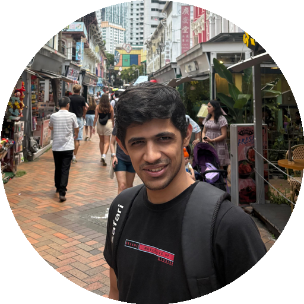
Hey, I am Tapasvi. I did Mechanical from BITS Pilani, where I worked with Dr. Suvanjan Bhattacharyya on thermal systems. Right now I am doing my PhD in Mechanical and Aerospace at NTU Singapore with Prof. Eddie. My day-to-day stack is cold-chain logistics, PCM behavior, sensor telemetry, and ML forecasting. Basically heat transfer core plus real-world deployment mode.
Hit me at tapasvi001 |at| e.ntu.edu.sg.
Heat transfer, cold-chain intelligence, CFD, and ML pipelines. Deep tech with real deployment focus.
Music is my reset button. Vocals, guitar, keys, and random jam sessions whenever lab life gets too intense.
I play chess on lichess because open-source energy is elite. You can catch me at my lichess profile.
Late-night rides, highway flow, and pure throttle therapy. Two wheels keep my head clear.
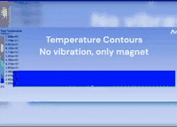
Magnetic nanofluids, vibration-assisted transport, exergy-focused design
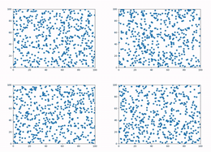
Flow field reconstruction, cross-correlation pipelines, collective dynamics
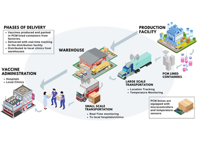
AI-driven PCM prediction, IoT telemetry, preventive vaccine logistics
I build full-stack research pipelines: transport physics, CFD, sensors, ML inference, and field testing. We do not stop at simulation plots. We push to deployable systems.
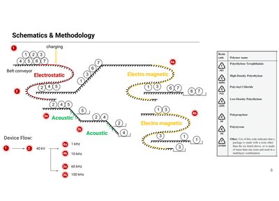
Waste Segregation, Plastic Differentiation
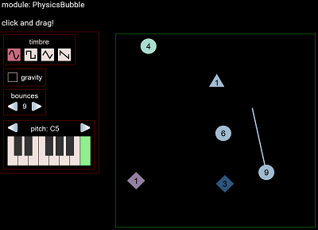
Music technology, UI/UX design, Python
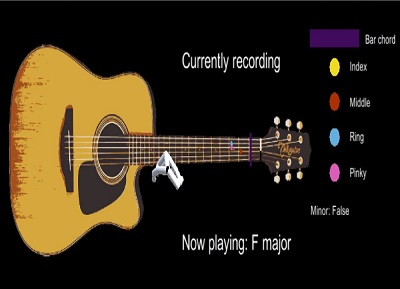
Unity, UI/UX design, XR
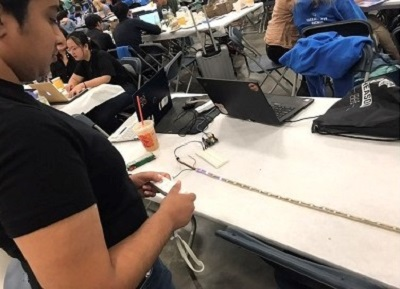
Game design
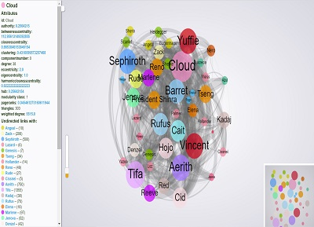
Graph visualization, Python, Gephi
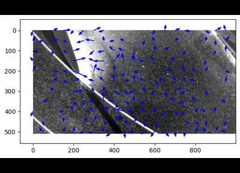
Self Propelled Movement
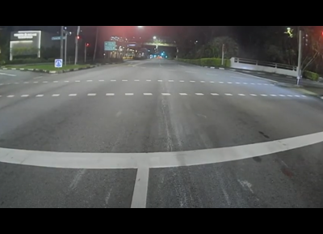
Night, Speed, Thrill
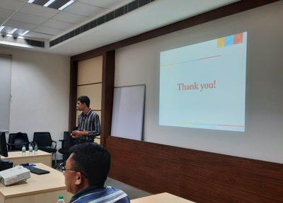
HT, FM, M&M
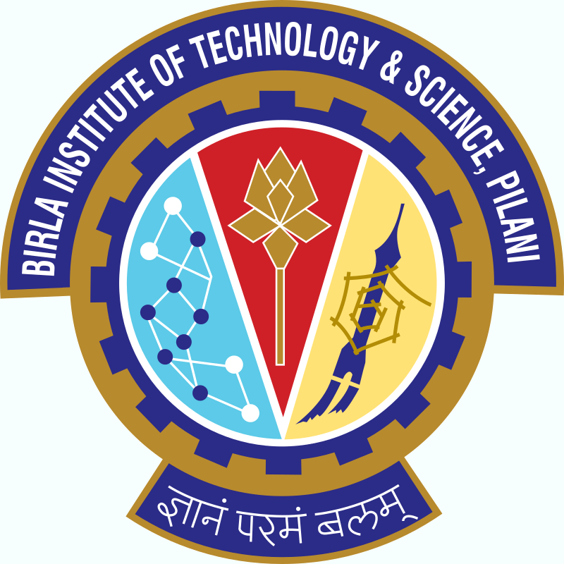
Started engineering at BITS Pilani. Thought cracking JEE would auto-solve life. It did not.

Grades crashed, motivation crashed, then recovery arc started. Had to actually study for real.
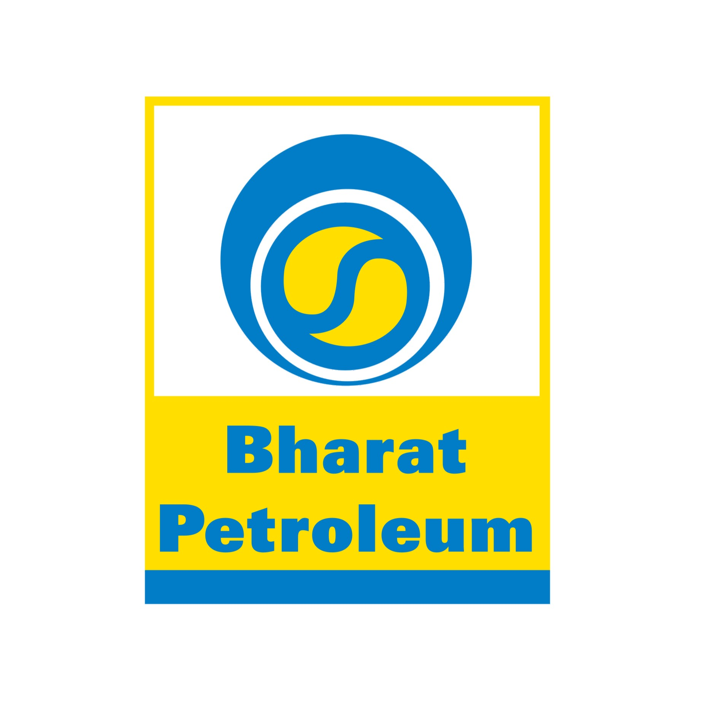
First real industry stint at BPCL Mumbai. Learned refinery workflows, some ML, and how to stay calm in live plant environments.
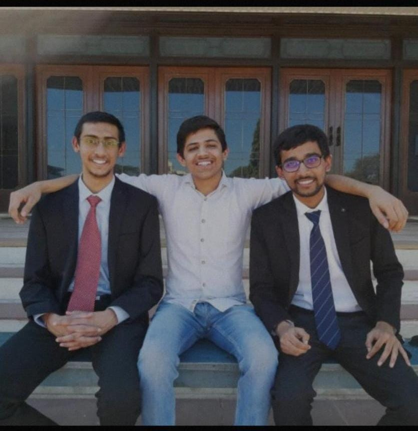
Led a 35 to 40 member team. Ran water-rocket events and pushed ASME's first online global event during lockdown.
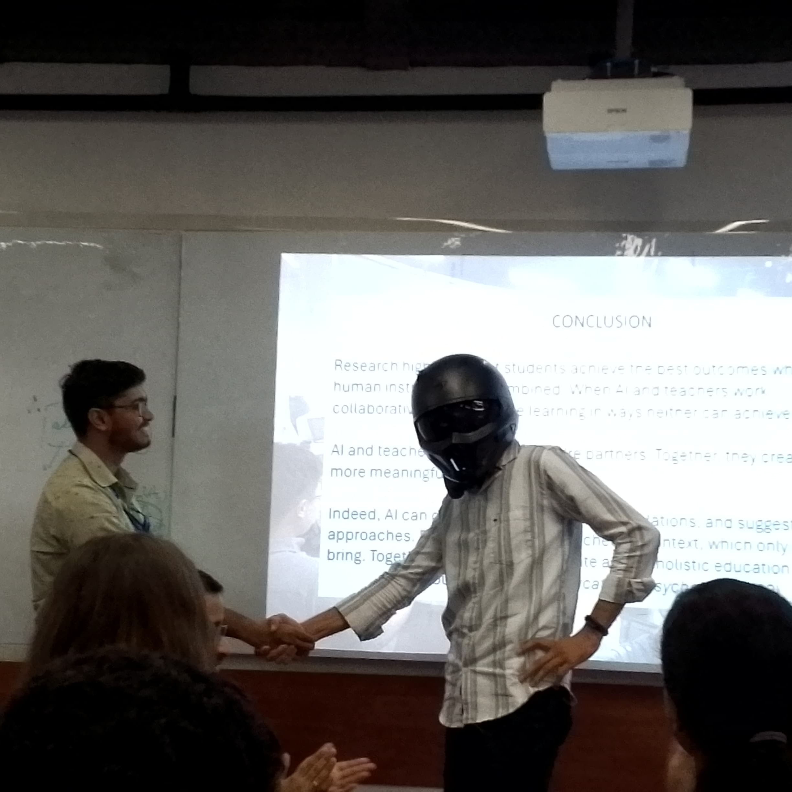
Teaching assistant for Mechanisms and Machines at BITS. This photo's from NTU where we did a skit instead of slides. I'm the one in the helmet, Mallar played the professor.
Summer at JSW Energy across Mumbai and Barmer. Worked on thermal plant and boiler performance with cost-saving proposals.
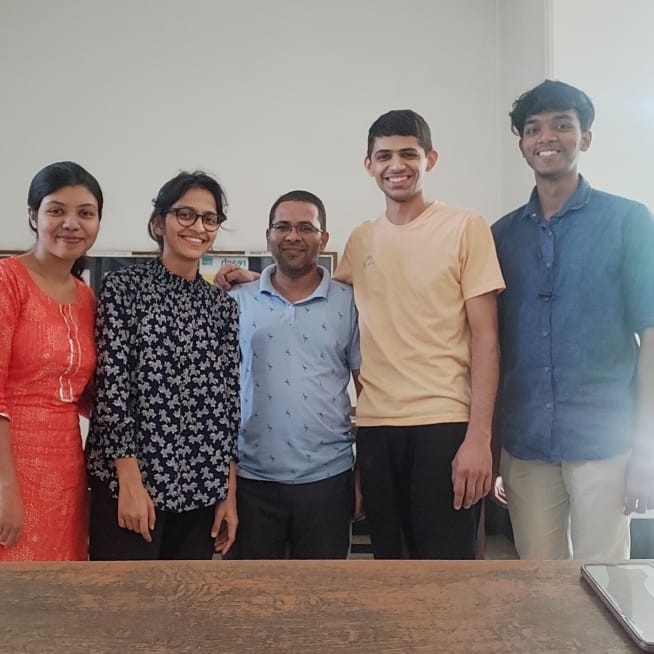
Short stint at IISc as project associate. Learned fast, pivoted fast, moved on with clarity.
Received the Distinguished Scholar Award from the Mechanical Engineering Department, University of Minnesota Twin Cities (Minneapolis, USA).
Awarded the Cockrell School of Engineering Fellowship by the recommendation from the Walker Department of Mechanical Engineering, University of Texas at Austin (Austin, USA).
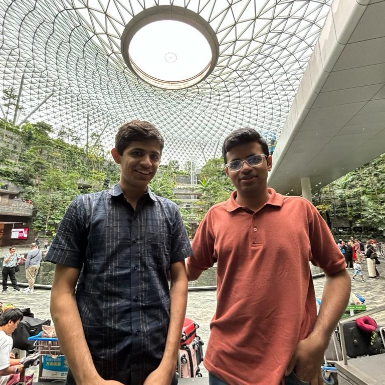
First time in Singapore with my friend Abhishek. Two Indians trying to decode a new country, one meal at a time.
Started PhD at NTU in Mechanical and Aerospace. Also tutoring Fluid Dynamics and Heat Transfer with full concept-first mode.
Our thermal imaging work for breast cancer detection got featured in Chinese media and TV. Coverage link is here.
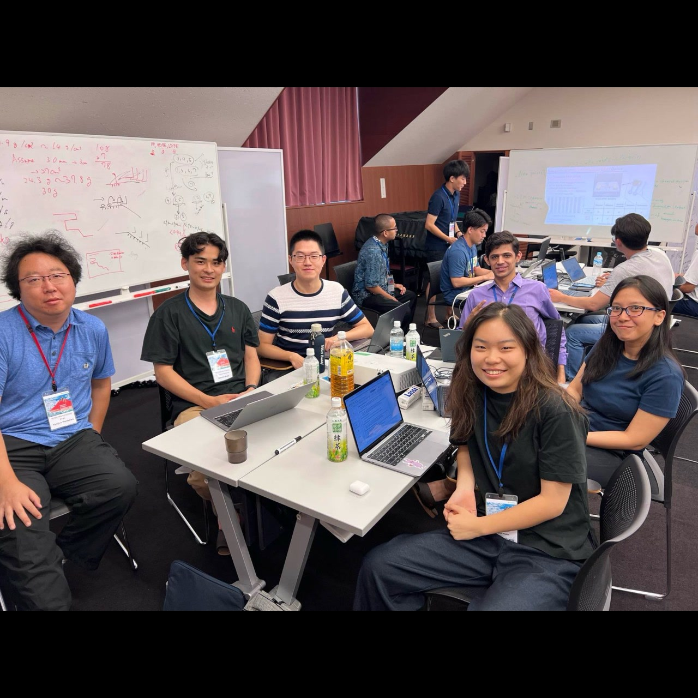
Research camp near Mount Fuji with UTokyo. We built a smart 3-in-1 plastic separation system for next-gen recycling lines. Details and photos.
Open to collabs, research chats, and random nerdy ideas.
Nanyang Technological University | Singapore